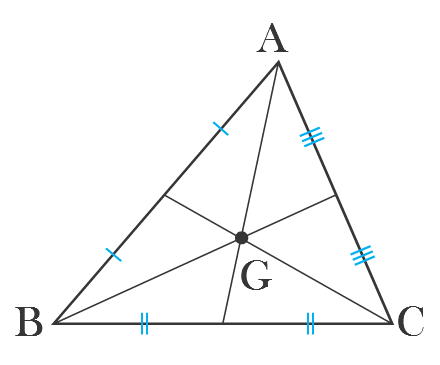
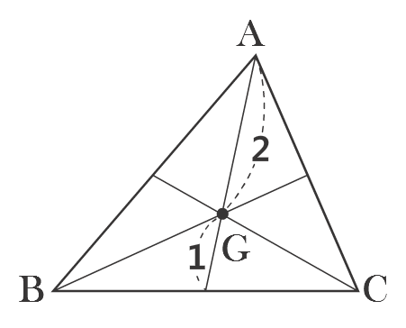
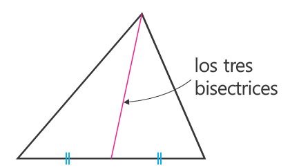

Actividad 6
Contenido
Averiguemos el significado y sus caracteristicas del baricentro o Centroide del triangulo.

Medianas se encuentra en un mismo punto(G), a este punto se le llama el baricentro ocentroide .
Averiguemos el significado y sus caracteristicas del baricentro o baricentro del triangulo.

- El baricentro o baricentro es dividir cada mediana desde el vertice en razón
2:1 .

La linea que une el vertice con el centro del segmento adyacente se llama mediana.
